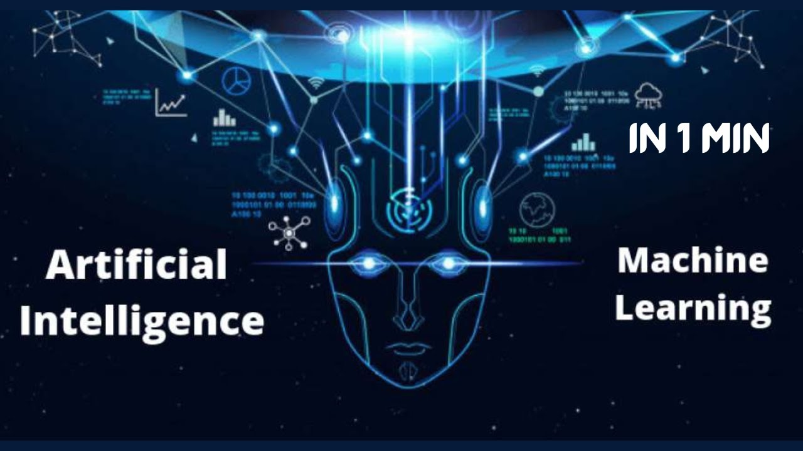

1.Бұлтты технологиялардың даму тенденцияларын талдаңыз.
2. AI (Artificial Intelligence) және ML (Machine Learning) бұлтты технологияларда қалай қолданылады?
3.Edge Computing концепциясын түсіндіріңіз.
4.Бұлтты технологиялардың бизнеске әсерін зерттеңіз.
5.Бұлтты технологиялардың экологиялық әсерін талдаңыз.
